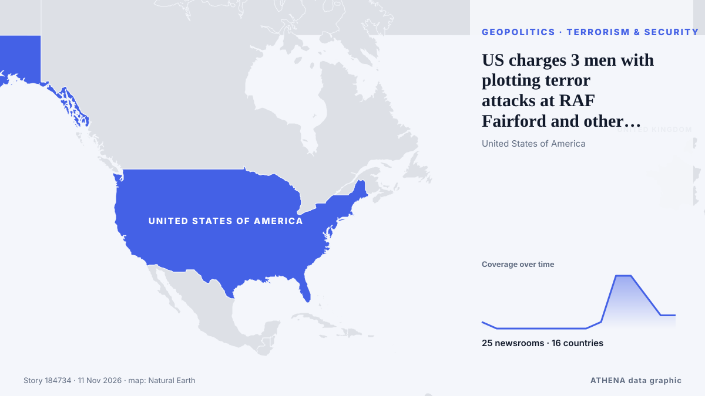

Geopolitics, Politics & Security
SponsoredPresented by  Cybernetics and Artificial Intelligence Lab Welcome to the Cybernetics and Artificial Intelligence Laboratory, established at the Department of Business Administration of the National and Kapodistrian University of Athens. The lab is headed by Professor Dimitrios Thomakos. The lab aims to do research that can be published in top venues. Our research uses tools and methods of Artificial Intelligence, and lies in the following areas: - Forecasting - Decision making - Cyber security - Finance We are always looking forward to collaborating with exceptional students!
Cybernetics and Artificial Intelligence Lab Welcome to the Cybernetics and Artificial Intelligence Laboratory, established at the Department of Business Administration of the National and Kapodistrian University of Athens. The lab is headed by Professor Dimitrios Thomakos. The lab aims to do research that can be published in top venues. Our research uses tools and methods of Artificial Intelligence, and lies in the following areas: - Forecasting - Decision making - Cyber security - Finance We are always looking forward to collaborating with exceptional students!

Terrorism & securityUS charges 3 men with plotting terror attacks at RAF Fairford and other sites
One Iran-backed militant helped plot the attack on UK's Fairford base from jail in the US, the Justice Department says. from The Independent
| 29 Oct | 245 |
|---|---|
| 30 Oct | 287 |
| 31 Oct | 154 |
| 1 Nov | 212 |
| 2 Nov | 316 |
| 3 Nov | 352 |
| 4 Nov | 396 |
| 5 Nov | 328 |
| 6 Nov | 227 |
| 7 Nov | 210 |
| 8 Nov | 200 |
| 9 Nov | 290 |
| 10 Nov | 193 |
| 11 Nov | 0 |
Fake 'Iranian' accounts campaigned for Netanyahu ahead of Israel's election
Former deputy governor tells Central Banking prime minister’s proposals are ‘stupid’ and ‘crazy’ from Central Banking
Russia and Ukraine hold nearly 4 hours of U.S.-mediated talks in Abu Dhabi
The official said it was possible the envoys would travel to Russia at some point after the talks in order to meet with Putin. from TASS (English)
Trump says Iran war is ‘effectively over’ after midterms humiliation
El-Sayed urges distinction between Judaism and Israel, rejecting claims that criticism of Israel is antisemitism. from Express Tribune
Iraq bars plane carrying Iran’s football team from landing in Basra over US sanctions
Iraq barred a plane carrying Iran’s national soccer team from landing at Basra airport on Tuesday, a decision by the Iraqi Civil Aviation Authority linked to US sanctions imposed on Iranian airlines… from Cyprus Mail
Democratic leader Hakeem Jeffries announces bid for US House speaker
'I write to humbly request your support in connection with my candidacy to serve as the next Speaker of the House of Representatives,' says Jeffries in letter. from Anadolu Agency (English)
Trilateral talks between Russia, Ukraine and US begin in Abu Dhabi
Rustem Umierov said Ukraine's team is en route to Abu Dhabi for trilateral talks on 10-11 November, with European and NATO representatives also attending. from Ukrainska Pravda (English)
Hardline Trump aide Stephen Miller takes over as White House chief of staff
The architect of the Trump administration’s brutal crackdowns on immigration and dissent was already known as “the prime minister.” Now he’ll work as the chief of staff. from Wired
Michigan election: How Abdul El-Sayed's critics smeared his defence of Palestinians as 'hate'
With New Hampshire and Georgia staying in Democratic hands, Republicans now look to Michigan for a pickup, where Democrat Abdul El-Sayed is competing with Republican Mike Rogers. from France 24 English
Iraq’s Khor Mor gas field halted after drone attack
BAGHDAD: A suspected drone attack in Iraq has halted production at the Khor Mor gas field, one of the largest in the semi-autonomous Kurdistan region, joint operator Dana Gas said on Monday. from Business Recorder
Rubio tells G7 US will keep imposing 'devastating' costs on Iran, diplomats say
By John Irish and Simon Lewis PARIS, Nov 10 (Reuters) - US Secretary of State Marco Rubio told G7 foreign ministers on Tuesday that the US would keep imposing "devastating" economic costs on Iran… from Al-Monitor
Colombian Firms Back Brazil Before Lula Win
Our experts unpack what Lula’s victory means for Brazil’s ties with Washington and how it could reshape a region trending right. from Atlantic Council
Mecca defense pact could anchor Lebanon’s security, experts say
Opposition Republican People’s Party (CHP) leader Kemal Kılıçdaroğlu has stated his party will vote in favor of a defense agreement between Türkiye, Pakistan and Saudi Arabia when it comes before… from Hürriyet Daily News
Russia and Ukraine hold first peace talks for nine months, gaps have narrowed
ABU DHABI: Russian and Ukrainian officials met in Abu Dhabi on Tuesday for their first US-brokered talks since February, after President Donald Trump suggested last week that a broad deal was… from New Straits Times
Trump says FBI investigating Nvidia boss's affair with alleged Chinese spy
US President Donald Trump has said the FBI is investigating the affair between the chief executive of Nvidia and an alleged Chinese spy. from MyJoyOnline
Saudi-led coalition says it intercepted Houthi missile
Saudi-led coalition claims Houthi missile destroyed over Eastern Province The Saudi-led coalition air defences intercepted and destroyed a ballistic missile launched by the Houthis toward the… from Middle East Eye
UFC chief Dana White declines Trump’s ‘jovial’ White House job offer
President Trump said he offered the job of White House press secretary to Dana White, president and CEO of the Ultimate Fighting Championship (UFC). from The Hill
Hasina seeks new passport in clearest sign of Bangladesh return
The request marks the clearest step by Hasina to act on her plan to return to Bangladesh in December. from Express Tribune
Trump: Iran war effectively over
Shafaq News- Washington (Updated at 1:30 a.m.) The war with Iran is effectively over from a military standpoint, US President Donald Trump said on Monday after meeting Qatari Prime Minister Sheikh… from Shafaq News (English)
Azerbaijan expresses condolences to Poland over deadly shooting in Krakow
The Azerbaijani Foreign Ministry has expressed condolences following a shooting in the Polish city of Krakow that resulted in fatalities and numerous injuries. from AzerNews
Trump thinks he will meet Xi and Putin at China APEC summit
Trump said he will travel to China for the APEC summit, set for Nov 18 to Nov 19. from The Straits Times
Four Killed in Gaza after Sand Embankment Collapses on to Tents
Torrential rain in Gaza caused a sand embankment to collapse on to tents, killing a woman and three small children in an incident that highlighted the danger facing hundreds of thousands of displaced… from Cyprus Mail
Riyadh financial district targeted, Aramco skyscraper damaged
An Aramco building in Riyadh was targeted in an "attempted attack", the Saudi energy ministry said on Sunday, with eyewitnesses telling AFP the skyscraper sustained damage, after the Saudi-led… from Al-Monitor
Trump says he is highly unlikely to order Iran strikes if talks progress
WASHINGTON/CAIRO, Nov 8 (Reuters) - US PresidentDonald Trump on Sunday said he was highly unlikely to order fresh attacks on Iran as long as talks to end the conflict progress, even as both countries… from Al-Monitor
G7 ministers press Rubio on Iran, Ukraine at Paris talks
Trump stoked fears of a U.S. pivot toward the Kremlin by predicting a "very big" deal with Russia involving not only Ukraine but "all of Europe." from Courthouse News
Trump admits US deportation policy may have been too tough
WASHINGTON: US President Donald Trump said that his mass deportation of undocumented immigrants was “too tough,” according to an excerpt of an interview with CBS aired Sunday. from New Straits Times
Europeans to join Ukraine peace talks in Abu Dhabi: Berlin
Lavrov says Abu Dhabi talks will address principles for a Russia-Ukraine peace deal, as top advisers from Germany, France and the UK attend to represent Ukrainian and European security interests. from TRT World
Italy blames pro-Russian hackers for leaking Tajani’s personal data
Italy’s prime minister, Giorgia Meloni, has blamed pro-Russian hackers for posting the foreign minister’s personal data on the dark web. from The Next Web
Ukraine Peace Talks Set for Abu Dhabi
The United States will bring together delegations from Ukraine and Russia in Abu Dhabi on November 10-11 to discuss ending Russia's conflict with Ukraine, post-conflict security agreements and… from CGTN (World)
Israel’s president picks Netanyahu rival Gadi Eisenkot to form government
The deadlocked election had left neither Prime Minister Benjamin Netanyahu nor his strongest rival, Gadi Eisenkot, with a clear path to power. from The Independent
Explosions heard on Iran's Qeshm Island, state media reports
TEHRAN, Nov 3: Several explosions were heard from the direction of the sea near Iran's southern port city of Bandar Lengeh on Monday, according to the IRGC-affiliated Fars news age... from Arab Times
Europe will be represented at US-mediated Ukraine talks in Abu Dhabi: France
France has announced that Europe will be represented at US-mediated talks in Abu Dhabi with Russia and Ukraine. from Arab News
US strikes on Iran's Qeshm Island cause no damage to vital infrastructure: Official
Hormozgan deputy governor says targeted sites were outside residential, commercial areas, with emergency services on high alert. from Anadolu Agency (English)
Poland calls Krakow shooting rampage 'terrorist' attack
Shooter, 25, remains in ‘very critical condition’ in hospital after shootout with police. from The Independent